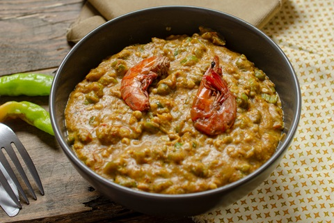
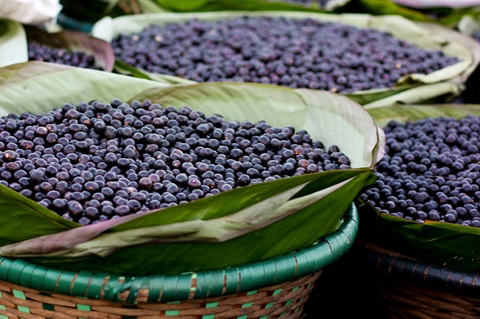

Belém, frequentemente chamado de Belém do Pará, é um município brasileiro e capital do estado do Pará,
inicialmente fundada em 12 de janeiro de 1616 como o povoado colonial português Feliz Lusitânia por capitão
Francisco Caldeira Castelo Branco, às margens da Baía do Guajará e do então igarapé do Piry na atual região
Norte do Brasil, a uma latitude 01º27'21" sul e longitude 48º30'16" oeste, estando a cerca de 2 120 km da capital federal Brasília.
O município é formado por duas partes: a área continental e a área Insular que é composta de quarenta e duas ilhas
(que são 65% de seu território). Devido ser integrante da Amazônia Oriental resulta em um clima quente úmido e na capital mais chuvosa do Brasil.
É o município mais populoso do Pará e o segundo da região Norte com uma população de 1 398 531 habitantes.
Classificada como uma das capitais com melhor qualidade de vida da região Norte brasileira com IDH 0,746 (alto),
ocupando a 22.ª posição no ranking de IDH por capital.
Culinária


A Belém gastronômica é um caldeirão de misturas étnicas, segundo o filósofo José Arthur Gianotti - tem sabores africanos, portugueses,
alemães, japoneses, libaneses, sírios, judeus, ingleses, barbadianos, espanhóis, franceses e italianos, que chegaram à capital se
encantaram com a cozinha nativa indígena – verdadeiramente brasileira - aos poucos foram incorporando seus ingredientes.
A forte influência indígena, criou pratos típicos como: pato no tucupi, tacacá, maniçoba, tucunaré cozido, caruru, normalmente
acompanhados com jambu e farinha dágua, entre outras delícias como o açaí. Há quem diga que o sabor dos peixes e das frutas é realmente diferente.
Os elementos encontrados na região formam a base de seus pratos e o sabor das sobremesas que enriquecem a mesa paraense. Destacam-se: açaí, bacaba,
cupuaçu, castanha-do-pará, bacuri, pupunha, tucumã, muruci, piquiá e taperebá.
Músicas
Devido sua posição geográfica estratégica, Belém foi rota de muitas companhias de navegação internacionais durante o Ciclo da Borracha,
na década de 1950 ocorreu a "rede de difusão cultural transatlântica", que levou ao aparecimento das aparelhagens sonoras, das festas de
gafieiras e dos cabarés, que contribuíram para a chegada da música afro-latino-caribenha (boleros e merengues) e início do circuito bregueiro
na cidade. Os ritmos mais populares são o calypso, brega paraense, tecnobrega, carimbó e, a guitarrada. Fortalecendo na década de 1970, quando
as rádios populares de Belém começaram a captar sinais de países como Suriname, Guianas e Bolívia, difundindo a cúmbia, merengue, salsa, zouk,
unificando tudo no gênero musical da lambada.